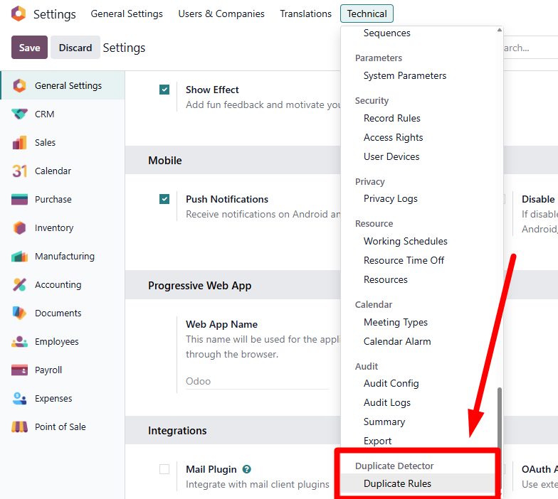
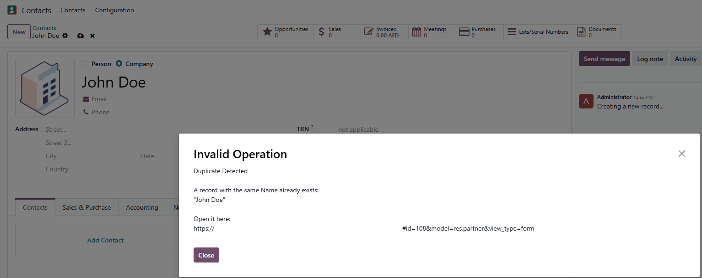

Stop duplicate records at the point of entry.
Configurable matching rules for any Odoo model.
Duplicate contacts, products, and vendors accumulate silently until they become a data quality crisis.
|
Any
Odoo Model
|
Multi
Field Matching
|
0
Code Required
|
Live
On Save
|
v19
Compatible
|
What this module does
Duplicate Record Detector adds configurable duplicate-checking rules to any Odoo model. Managers define which model to watch and which fields to match. When a user saves a record that already exists in the system, they see an instant alert with the name of the existing record and a direct link to open it.
Without this module, duplicate contacts, products, suppliers, and customers pile up unnoticed until they cause reporting errors, payment mistakes, or inventory confusion. This module stops duplicates at the point of entry rather than after the damage is done.
|
⚙
Per-Model Rules
Configure one rule per model. Watch Contacts, Products, Vendors, or any other model in your database. Each rule is independent and can be enabled or disabled at any time. |
🔍
Multi-Field Matching
Select one or more fields per rule. All selected fields must match for a record to be flagged, giving you precise control over what counts as a duplicate without false positives. |
🔗
Direct Link to Duplicate
The alert shows the name of the existing record and a clickable link to open it directly. Users can review the existing record and decide whether to proceed or discard their entry. |
|
⚡ Performance Optimized
Uses a limit=1 search that stops at the first match. Works in milliseconds even on tables with 150,000 plus records. Zero performance overhead when no rule is configured for a model. |
🔒 Admin-Only Configuration
Rules are accessible only to system administrators under Settings > Technical. Regular users see the warnings but cannot modify or disable the rules. |
|
🔄 Create and Edit Coverage
Duplicate checks run on both record creation and editing. If an edit makes a record match an existing one, the alert fires and shows the conflict before the save completes. |
🛡 Import Safe
Bulk imports and programmatic operations can bypass the check using the duplicate_skip context key. This prevents noise during migrations and batch data loads. |
How it works
|
1
|
Open the Duplicate Rules list
Go to Settings > Technical > Duplicate Detector > Duplicate Rules and click New. |
|
2
|
Pick the model to monitor
Select the Model to monitor, for example Contact, Product, or any custom model in your database. |
|
3
|
Choose the fields to check
Only stored fields for the selected model appear. All selected fields must match for a record to be considered a duplicate. |
|
4
|
Save and protect your data
From now on, any user who tries to save a matching record will see an alert with the duplicate's name and a link to open it. |
Screenshots
DUPLICATE RULE CONFIGURATION

DUPLICATE ALERT ON SAVE

Technical information
|
Version
19.0
|
License
LGPL-3
|
Editions
Community & Enterprise
|
Dependencies
base
|
Technical name: ma_duplicate_detector · Models added: ma.duplicate.rule
Frequently asked questions
Duplicate Record Detector warns users when they save a record that matches an existing one, at no cost.
With this free module, yes; it shows a warning when a matching record is found.
The free version warns on close matches; Smart Duplicate Detector adds fuzzy matching and a configurable threshold.
It shows a warning when a matching record is found, so the user can stop and review before creating a duplicate. It acts as a guardrail rather than a hard block, leaving the decision with your team.
It checks contacts and other records as they are saved, catching the duplicate contacts and records that quietly build up over time. Preventing them at the source keeps your reporting and communication reliable.
Yes, it works on both Community and Enterprise. Check the Odoo Apps Store listing for the exact version it supports.
The team behind this module
Full-Service Odoo ERP Agency · Solutions That Scale
Every module in our store is built from real client work, tested in production and maintained long-term by a team of Odoo certified consultants. When you need more than an app, we deliver the full solution.
|
🏗️ Implementation
Full Odoo roll-outs from requirements to go-live, across any industry and company size. |
🧩 Custom Development
Bespoke modules, OWL components and business logic built precisely to your workflow. |
🔄 Migrations
Zero-data-loss upgrades from older Odoo versions with full custom module porting. |
|
🔌 Integrations
Payment gateways, shipping carriers, biometric devices, eCommerce and third-party APIs. |
🔍 Odoo Audits
Performance, security and code-quality reviews that surface risks before they become problems. |
🧑💻 Support & Training
Ongoing helpdesk, user training and monthly retainers so your team stays productive. |
|
Odoo
Certified
|
6+
Years
|
50+
Projects
|
10+
Industries
|
90+
Published Apps
|